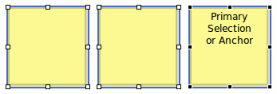

To select a widget just click on it. For multiple selection hold the Ctrl key while clicking to toggle the selected state of a widget. Hold Shift while clicking to add a widget to the current selection.
Selected widgets have a blue rectangle around them – move handle, and white or black squares which are resize handles. One widget that has black resize handles is called primary or anchor selection. This is the last widget selected. Relative actions such as align and match size use primary selection as their reference.

The Marquee tool gives you another selection method. Use it to drag a bounding box around widgets you want to select. Marquee tool activates automatically when you start dragging in an empty space of the editor canvas. If the screen is crowded and has little empty space then use F4 keyboard shortcut to quickly activate the Marquee tool. Use F3 to go back to the Select tool.
You can also select widgets in the Outline view which keeps in sync with the editor’s selection.
Next: Editing Properties